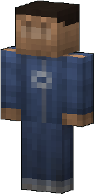
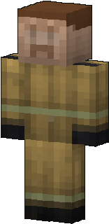
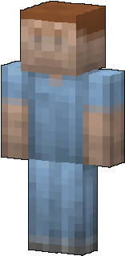
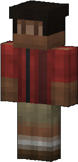
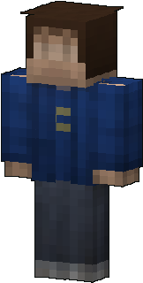
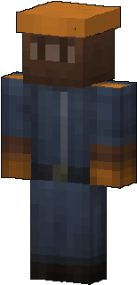
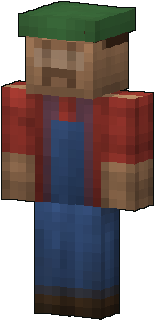
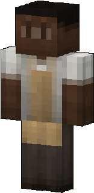
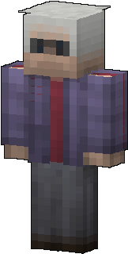
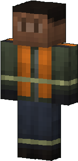

Survivors
Not everybody turned. Survivors live in Haven Hill, and a few hide in the ruins of the other towns. They are friendly, a little nervous, and always happy to see a living face.
How survivors live
Right click a survivor: a few words and 1 scrap, once a day each. Come back tomorrow for more.
The people of Haven Hill stroll around their home by day and stay put at night. They carry a bat, a golf club, a frying pan, a shovel or a traffic sign, and fight the zombies that come in.
In the other towns, survivors hide in the ruins. The zombies do not hunt them, and they never leave their hiding spot. Right click them to talk.
A survivor at 0 health falls instead of dying. Sneak next to them for 3 seconds to revive them. Left alone too long, they flee; in Haven Hill a newcomer takes their place the next morning.
Your hits hurt them too.
Haven Hill
The safe town, guarded by its people. See the town →
No zombie appears inside Haven Hill by day: the townsfolk stroll in the streets, and the 8 traders run the market. Talk to a townsfolk: a few words and 1 scrap, once a day.
At night a group of 2 to 4 zombies of the same kind gathers outside the walls and heads for the town about every 2 to 3 minutes. The watch bell rings: zombies at the walls!
The townsfolk fight back with bats, golf clubs, pans and shovels. Knocked down, they wait for you: sneak next to them to get them back up. A survivor who had to flee is replaced by a newcomer the next morning.
Their looks
10 faces you may meet.









